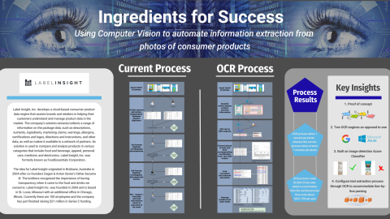

~ My Projects ~
Click on a project photo to read my blog post and learn more about it.
Label Insight: Ingredients For Success
Leveraged OCR and Computer Vision technology to classify and read text off photos of consumer products to extract meaningful nutrient information.
Agent Training Tracker for all Virtual Customer Service (VCS) Associates
When the project was first initiated, several documents were provided to me that contained information as to the baseline requirements for each subsite. After I sorted through and documented all of the pre-existing requirements, I organized and conducted a Stakeholder meeting in order to identify any additional requirements that were not laid out in these documents. In an effort to accurately prioritize the requirements list, I coordinated meetings with identified POC’s who were working on projects that may have coincided with components of this project and may therefore have alleviated the need for some of the requirements mentioned above. Following those meetings/revelations and with all of the gathered information above in mind, I compiled the final prioritized requirements and reviewed it in a meeting with all of the stakeholders for approval. I then identified the data pieces needed in order to fulfill the final requirements and categorized them by source. Then, I created the necessary reports to gather the information, and scheduled them to run from their different sources and be uploaded to EDX/S3 (secure encrypted storage location) daily, then I created an ETLM (job scheduler) job to bring the information from EDX/S3 into the appropriate tables that I created for it in Redshift. Following that, I wrote two separate Redshift queries. One that would serve as the bulk data pull for the tool, and another that would pull all of the attrition data into one report as well. From there, I scheduled another ETLM job and made a data connection with Excel that would run the queries on the Redshift tables daily and bring that information into the reports in Excel which then refreshes the data in the tool. After all of that was implemented, the data pipeline was complete. From there, I created and implemented the UI, and all of the data connections had to be made between the back-end and the front-end to ensure that the information was displayed accurately and visualized as intended. I then initiated usability testing, and made any necessary adjustments prior to the final stakeholder meeting and demo.
Spare the Aspirin and Make the Database Headache-Free Instead: Prevent Child Abuse America
For this project I worked as a Business Information Analyst. In this role I conducted background research on the NPO database market, created and dispersed a usability survey, and conducted multiple interviews with regular users of the database. My partner and I collected and analyzed all of the raw data from these processes in order to provide useful recommendations for the future of the business involving the PIMS database.